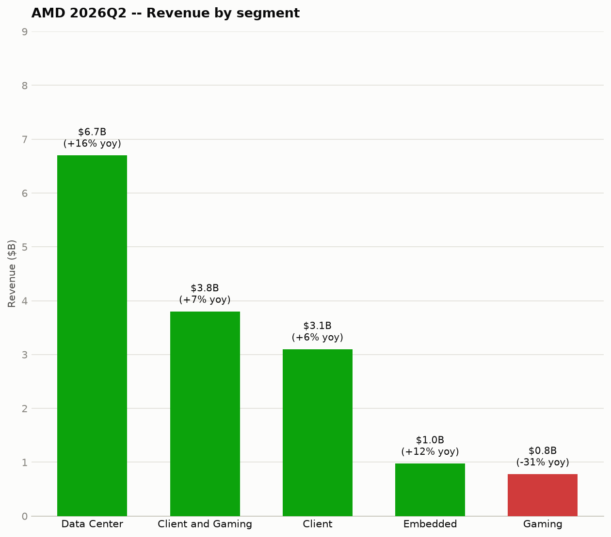
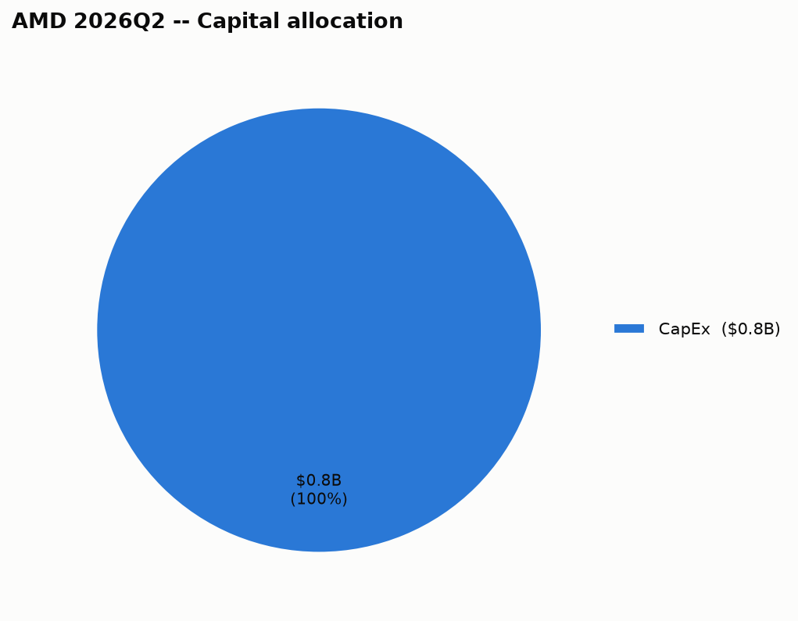

| Segment | Revenue | Growth (yoy) |
|---|---|---|
| Data Center | $6.70B | +16% |
| Client and Gaming | $3.80B | +7% |
| Client | $3.10B | +6% |
| Embedded | $977.0M | +12% |
| Gaming | $779.0M | -31% |
Advanced Micro Devices Inc doesn't disclose gross margin by individual segment in this data, so it's left out rather than estimated.
What's driving each segment:

| Use of cash | Amount |
|---|---|
| CapEx | $808.0M |
| This quarter | |
|---|---|
| Cash & securities | $13.10B |
When it's due: $875.0M in next 12mo, $750.0M in year 2, $625.0M in year 3, $0 in year 4, $750.0M in year 5, $1.00B in after 5yr — the aggregate principal-by-year figure Advanced Micro Devices Inc files with the SEC (as of 2025-12-27); individual notes (coupon, specific maturity date) aren't broken out at that level in this data.
Against this backdrop, we expect our client business to perform better than the market, driven by the strength of our Ryzen portfolio and growing commercial adoption. Customer demand for Venice is stronger than for any prior EPYC generation, and we expect to continue growing market share across cloud and enterprise in the coming quarters. We gained x86 server revenue share year-over-year as customers expanded deployments of both fifth-gen EPYC Turin and fourth-gen EPYC Genoa families.